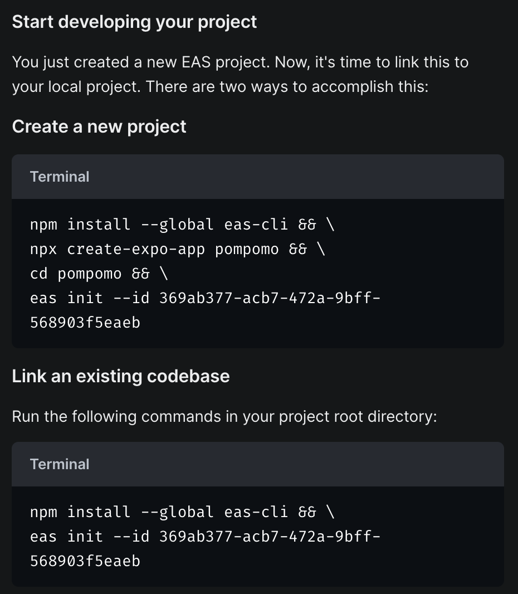
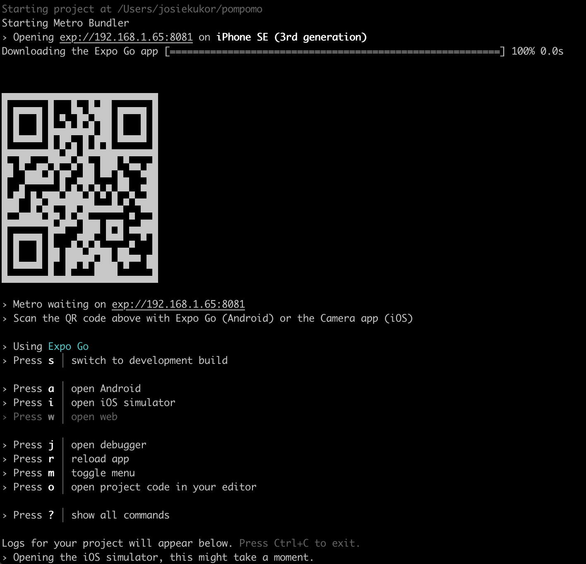

We named ours Pompomo (Just like cute little pomeranians 🐾)
Create a new project by running the below (Note that Pompomo is the name of our project, and this will be different depending on how you name your project)

Once you run the code above, you will be asked to confirm installing the Expo app package, and to proceed, just run y

Once the packages are installed, you can choose what kind of an app you want to create. We chose to go for iOS by running npm run ios
You will need to sign up with your Expo account user details to proceed
Once you run this, it will open the simulator app, showing a preview on iPhone
You can also choose a device you want to display by clicking “file” in the menu bar and choosing a new phone by going to “open simulator”
You will get a QR code in the terminal you can then scan with your Camera app to open the project in the app
In your terminal, you can also see the log for your project
Congrats! You just started your first Expo project 🥳